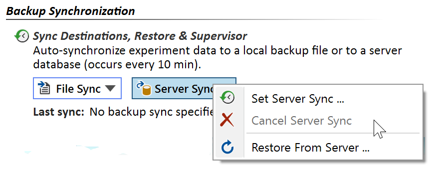

Server Sync
Server synchronization automatically updates an Espresso ELN server database with the latest changes in your experiment database (occurs every 10 minutes). You can restore your local experiment database form this server whenever required, and additionally share your experiments to act as an in-house reaction database.
If a MySQL or a MariaDB server are not already present in your environment, they can rather easily be set up, e.g. on an inexpensive NAS sever box for your working group. The Espresso ELN download page on chembytes.com offers the Espresso ELN Server Package for download. The server database centrally stores experiment data of all Espresso ELN users of your organization. This is different from file backup synchronization, where individual backup files may be spread across many locations and cannot be shared.
After the server infrastructure is in place, server synchronization can be established in the "Dashboard" section of Espresso ELN by clicking the Set Server Sync button.

Click the Set Server Sync menu item to establish server synchronization. This will open the server connection dialog:

Enter the following connection data, as provided by your Espresso ELN server administrator:
- Server Path: This is either the unique name of your server containing the Espresso ELN database, or its address ('marsustation' above is just an example).
- Port: The server port normally should be left at the 'Default' option (this is port 3306). In special cases, e.g. when running two database versions in parallel, you may assign another port number by selecting the 'Custom' option.
- User-ID / Password: The required user-ID and password are the same for all Espresso ELN users in your organization, where the user-ID always is 'EspressoUser'. The database password, however, needs to be specified and communicated to you by your database administrator. You need to enter these login data just once, they are remembered when launching the application the next time. It is important to note that all server users enter exactly the same login data, including the server password (this is not to be confused with the personal ELN user name and password).
After clicking OK, the complete content of your local experiment database is uploaded to the server to initialize the synchronization. This may take a while, depending on data volume and connection bandwidth. All subsequent synchronizations will only transfer the changes since the last update. Since this is occurring in the background, you will be able to continue to work normally, even while a lengthy synchronization is ongoing.
- Click the Restore From Backup menu item to restore your experiments database from the file backup. This will replace your current experiments database with backup. See the Restore topic for more information about restoring.
- Click Disconnect button if you'd like to discontinue the file synchronization. The synchronization can be resumed later on if desired.